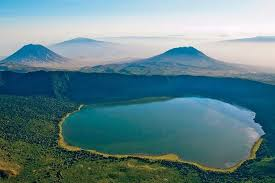

The Ngorongoro Crater, situated in Tanzania, is a breathtaking natural wonder formed by the collapse of a large volcano millions of years ago. It's a UNESCO World Heritage Site and one of Africa's most spectacular landscapes.
This period offers excellent wildlife viewing opportunities, as animals gather around water sources and vegetation is less dense, making sightings easier. The weather is typically dry and mild, with cooler temperatures in the mornings and evenings.
Wet Season (November to May):The wet season brings lush green landscapes and newborn wildlife, but it can also mean muddy roads and increased vegetation, making wildlife sightings more challenging. However, this is a great time for birdwatching, as migratory birds flock to the area.
Shoulder Seasons (March to May and November):These transitional months offer a balance between the dry and wet seasons, with fewer tourists and still plenty of wildlife to see. It's a good time to visit for those looking to avoid crowds and enjoy pleasant weather.